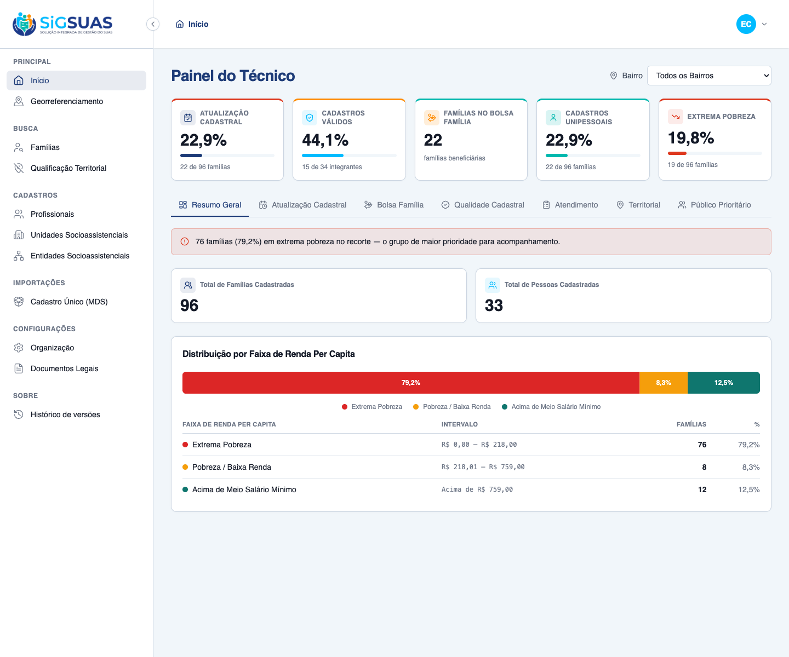
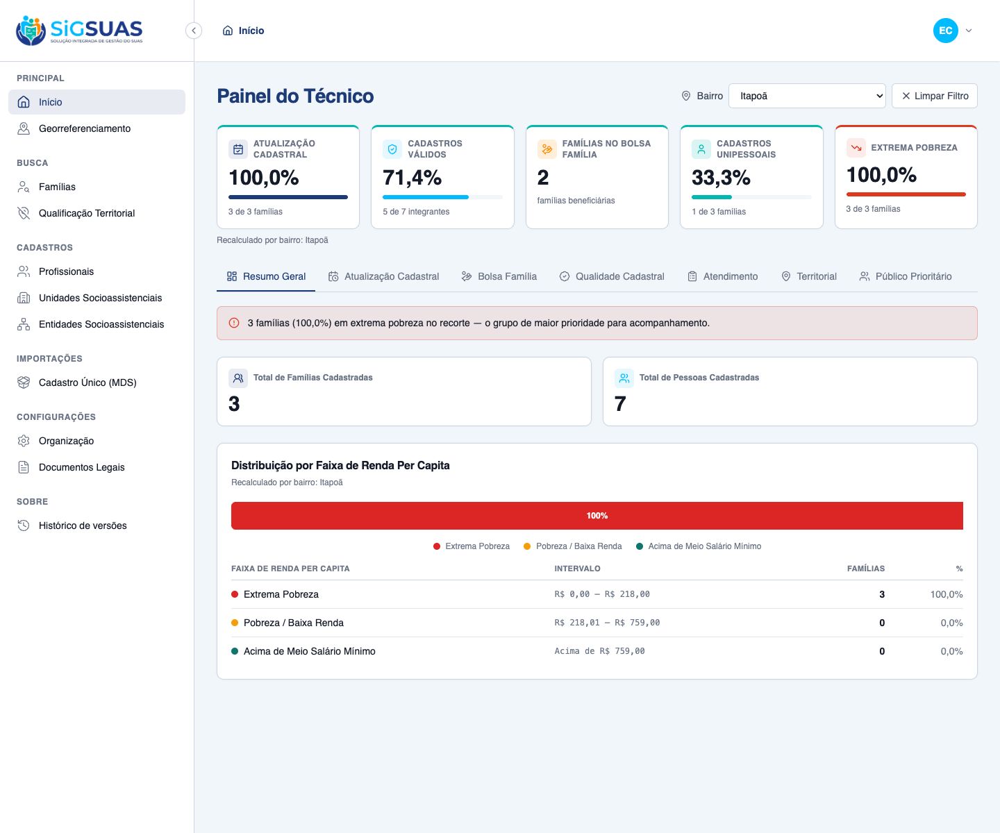

Relatório de Critérios de Aceite — Painel 1: Resumo Geral
Resumo
8 critérios evidenciados: 5 por navegador dirigindo o client real (CA03 consistência de totais e faixas, RN03 indicadores do painel, e as três facetas do RG01 — visão padrão "Todos os Bairros", recálculo dinâmico ao selecionar um bairro e "Limpar Filtro") e 3 por suíte automatizada (isolamento multi-tenant, gate de permissão e salário mínimo cadastrável por exercício). Todos atendidos. Suíte Pest do backend: 26 testes verdes (103 asserções).
| CA | Critério | Status |
|---|---|---|
| CA03 | Consistência de totais e faixas (soma das 3 faixas = Total de Famílias) | ATENDIDO · navegador |
| RN03 | Indicadores do Painel 1 (Total de Famílias, Total de Pessoas, distribuição por renda) | ATENDIDO · navegador |
| RG01-a | Filtro global por Bairro — comportamento padrão ("Todos os Bairros") | ATENDIDO · navegador |
| RG01-b | Filtro global por Bairro — recálculo dinâmico ao selecionar um bairro | ATENDIDO · navegador |
| RG01-c | Filtro global por Bairro — "Limpar Filtro" retorna à visão municipal | ATENDIDO · navegador |
| ISO | Isolamento multi-tenant (famílias de outro tenant nunca entram) | ATENDIDO · automatizado |
| PERM | Gate de permissão (sem dashboard.view-indicators → 403 / painel oculto) | ATENDIDO · automatizado |
| SM | Salário mínimo cadastrável por exercício (tabela minimum_wages) | ATENDIDO · automatizado |
CA03 — Consistência de totais e faixas (soma das 3 faixas = Total de Famílias) ATENDIDO · navegador
Critério (Gherkin): Dado que estou na aba "Resumo Geral" E o filtro territorial está em "Todos os Bairros" Quando o painel é calculado Então o somatório das 3 faixas de renda (Extrema Pobreza + Baixa Renda + Acima de Meio SM) é EXATAMENTE igual ao Total de Famílias Cadastradas do município.
Como foi testado: Login como Master, aba Resumo Geral com o filtro em Todos os Bairros. Leitura direta dos cartões e das faixas do painel.
- Total de Famílias Cadastradas = 96.
- Extrema Pobreza 76 (79,2%) + Pobreza/Baixa Renda 8 (8,3%) + Acima de Meio SM 12 (12,5%) = 96.
- A soma das 3 faixas bate exatamente com o Total de Famílias (CA03 atendido). Inclui 1 família de origem manual com renda nula, contabilizada como R$ 0,00 na Extrema Pobreza (P3).

RN03 — Indicadores do Painel 1 (Total de Famílias, Total de Pessoas, distribuição por renda) ATENDIDO · navegador
Critério (Gherkin): Dado um recorte com famílias e integrantes Quando o painel é calculado Então "Total de Famílias Cadastradas" = famílias distintas do recorte E "Total de Pessoas Cadastradas" = cidadãos distintos (integrantes ativos) E a distribuição traz as 3 faixas com contagem e percentual.
Como foi testado: Painel Resumo Geral no recorte municipal: cartões de totais + gráfico de barras das 3 faixas de renda per capita (Apache ECharts) + legenda com contagem/percentual.
- Total de Famílias Cadastradas = 96; Total de Pessoas Cadastradas = 33 (integrantes ativos distintos).
- Distribuição por Faixa de Renda Per Capita renderizada em ECharts: Extrema Pobreza (R$ 0,00–218,00), Pobreza/Baixa Renda (R$ 218,01–759,00) e Acima de Meio Salário Mínimo (> R$ 759,00).
- Faixa intermediária delimitada por meio salário mínimo (R$ 759,00) derivado da tabela cadastrável minimum_wages (SM R$ 1.518,00).
RG01-a — Filtro global por Bairro — comportamento padrão ("Todos os Bairros") ATENDIDO · navegador
Critério (Gherkin): Dado que acabei de carregar a aba "Resumo Geral" Quando nenhum bairro está selecionado Então o filtro inicia em "Todos os Bairros" E os totais e a distribuição refletem a consolidação municipal completa do tenant.
Como foi testado: Ao abrir o dashboard, o filtro global (topo, à direita) inicia em Todos os Bairros.
- Filtro em "Todos os Bairros"; barra fixa de KPIs e painel Resumo Geral exibem a consolidação municipal (96 famílias).

RG01-b — Filtro global por Bairro — recálculo dinâmico ao selecionar um bairro ATENDIDO · navegador
Critério (Gherkin): Dado que o filtro global está em "Todos os Bairros" Quando eu seleciono o bairro "Itapoã" Então o Total de Famílias, o Total de Pessoas e as 3 faixas recalculam considerando apenas as famílias geocodificadas dentro do bairro (RN09) E o somatório das 3 faixas continua igual ao Total de Famílias do recorte.
Como foi testado: Seleção do bairro Itapoã no filtro global. Um único evento recalcula a barra fixa E o painel ativo (RG01/RN08).
- Recálculo instantâneo: Total de Famílias 96 → 3 e Total de Pessoas 33 → 7.
- Distribuição do bairro: Extrema Pobreza 3 (100%), demais faixas 0 — soma 3 = Total (CA03 mantido no recorte).
- A barra fixa de KPIs também recalcula (Atualização 100%, Válidos 71,4%…) e ambas exibem "Recalculado por bairro: Itapoã".

RG01-c — Filtro global por Bairro — "Limpar Filtro" retorna à visão municipal ATENDIDO · navegador
Critério (Gherkin): Dado que estou com o bairro "Itapoã" selecionado Quando eu aciono "Limpar Filtro" Então o painel volta à consolidação municipal completa.
Como foi testado: Clique no botão Limpar Filtro (visível quando há bairro selecionado).
- Filtro volta a "Todos os Bairros"; Total de Famílias 3 → 96 e Total de Pessoas 7 → 33.
- Painel e barra fixa retornam à consolidação municipal completa.
ISO — Isolamento multi-tenant (famílias de outro tenant nunca entram) ATENDIDO · automatizado
Critério (Gherkin): Dado um usuário vinculado ao Tenant A Quando ele solicita o Resumo Geral Então apenas famílias/pessoas do Tenant A entram nos cálculos E um neighborhood_uuid de bairro fora do município do Tenant A retorna 422.
Como foi testado: Coberto por teste automatizado (Pest) — ver apêndice.
- DashboardGeneralSummaryIsolationTest: famílias do Tenant B nunca são contadas para o Tenant A; totais e distribuição isolados por tenant_id.
Evidência por cobertura automatizada — ver Anexo.
PERM — Gate de permissão (sem dashboard.view-indicators → 403 / painel oculto) ATENDIDO · automatizado
Critério (Gherkin): Dado um usuário sem a permissão dashboard.view-indicators Quando ele chama o endpoint do Resumo Geral Então recebe 403 (e o painel não é exibido).
Como foi testado: Coberto por teste automatizado (Pest) — o endpoint reusa o mesmo gate da barra fixa (#10184).
- GeneralSummaryTest: operador sem o papel dedicado recebe 403; Master e geo_panel_viewer acessam. No frontend, o painel só é montado com a permissão.
Evidência por cobertura automatizada — ver Anexo.
SM — Salário mínimo cadastrável por exercício (tabela minimum_wages) ATENDIDO · automatizado
Critério (Gherkin): Dado que o meio salário mínimo delimita a faixa intermediária Quando o Super Admin cadastra o salário mínimo por exercício Então o painel usa MinimumWage::currentAmount()/2 (sem configuração por env).
Como foi testado: CRUD global de minimum_wages (guard manager) + resolução do valor vigente. Coberto por Pest.
- MinimumWageControllerTest: CRUD com unicidade por exercício, ativação e resolução de currentAmount (maior ano ≤ atual, com fallback).
- No ambiente E2E, o valor vigente R$ 1.518,00 (tabela) define a faixa intermediária até R$ 759,00 — sem variável de ambiente.
Evidência por cobertura automatizada — ver Anexo.
Anexo — Cobertura automatizada (Pest — GeneralSummary + MinimumWage + Isolamento)
PASS Tests\Feature\Dashboard\GeneralSummaryTest ✓ it distributes families across the 3 income bands and the sum equal… 0.47s ✓ it counts families with null per_capita_income (manual origin) as e… 0.05s ✓ it uses the registered minimum wage of the exercise to size the mid… 0.05s ✓ it counts distinct persons among active members (a person in two fa… 0.06s ✓ it returns zeroed totals and bands without error when the scope has… 0.04s ✓ it recalculates the summary for a neighborhood, covering only geoco… 0.06s ✓ it returns 422 for a neighborhood_uuid outside the tenant municipal… 0.04s ✓ it returns 422 for a malformed neighborhood_uuid 0.04s ✓ it reports the same total_families as the strategic indicators for… 0.06s ✓ it denies the summary to the base operator without the dedicated ro… 0.04s ✓ it grants the summary to the operator once the geo_panel_viewer rol… 0.04s ✓ it grants the summary to the Master without any add-on role 0.04s PASS Tests\Feature\Api\MinimumWageControllerTest ✓ it lists minimum wages sorted by year desc by default 0.03s ✓ it creates a minimum wage 0.02s ✓ it returns 422 on duplicate year 0.02s ✓ it validates required fields on create 0.02s ✓ it rejects a non-positive amount 0.02s ✓ it updates a minimum wage amount 0.02s ✓ it keeps year unique on update but allows keeping its own year 0.02s ✓ it shows a minimum wage 0.02s ✓ it soft deletes a minimum wage 0.02s ✓ it filters by is_active 0.02s ✓ it requires authentication 0.01s ✓ it forbids access without permission 0.02s ✓ it resolves the current amount from the latest year <= current, wit… 0.02s PASS Tests\Feature\TenantIsolation\DashboardGeneralSummaryIsolationTest ✓ it never counts families from another tenant in the general summary… 0.05s Tests: 26 passed (103 assertions) Duration: 1.37s